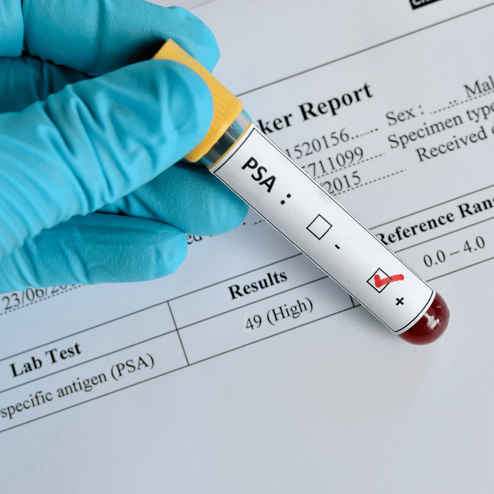
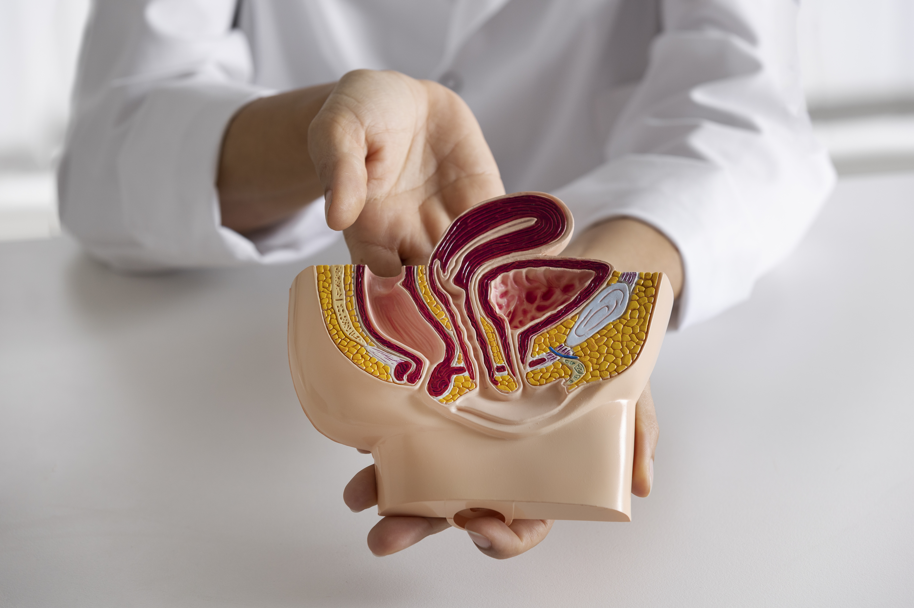

Cáncer de Próstata
Cáncer de Próstata
Prevención, detección temprana y cuidado integral
La próstata es una órgano que pertenece al aparato reproductor masculino.
Esta glándula se ubica en la pelvis, inmediatamente por debajo de la vejiga, rodeando la uretra, anterior al recto y los paquetes vasculonerviosos que llevan parte de la irrigación e inervación a los cuerpos cavernosos del pene.
Es una sustancia producida por la próstata.
Población: Hombres de 50 a 75 años
Se recomienda en hombres entre 50 y 75 años mediante:


No fumar
Alimentación saludable
Actividad física
Peso saludable
